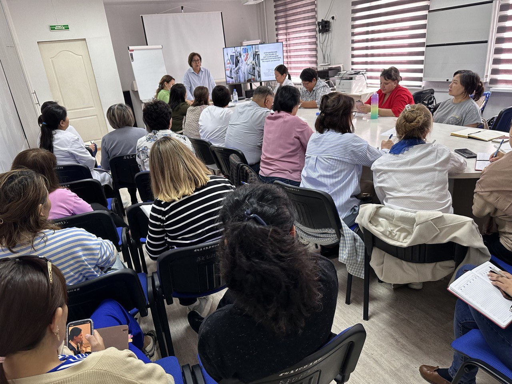

9 сентября 2024
В рамках соответствия национальным стандартам аккредитации медицинских организаций в центре фтизиопульмонологии проходит первый день семинарского обучения по управлению рисками в организации здравоохранения.
Основные темы семинара, разработанные Гаухар Альжаксиной, доктором медицины, EMBA, менеджером здравоохранения и консультантом по внедрению стандартных аккредитаций, включают: - основы управления рисками - анализ и оценка риска - идентификация рисков - реагирование на риски - мониторинг и контроль рисков - управление рисками - инструменты анализа и управления рисками в здравоохранении.
Поскольку риск определяется как возможное событие, способное отрицательно воздействовать на организацию, управление рисками представляет собой управление, направленное на предотвращение этих событий или уменьшение их негативных последствий. При этом важно, чтобы каждый сотрудник осознавал свою роль в управлении рисками.
Медицинские и немедицинские специалисты нашего центра учатся определять и управлять факторами, которые могут влиять на стратегические цели организации (SWOT-анализ, PEST-анализ), финансовые, на цели по соблюдению требований и на цели в ежедневную операционную деятельность.